Publications Google Scholar →
2026 (preprints)

arXiv:2603.11725 · Under review (Computer Vision Conference, 2026)
No preview
No preview

arXiv:2602.16821 · Under review (2026)
2025
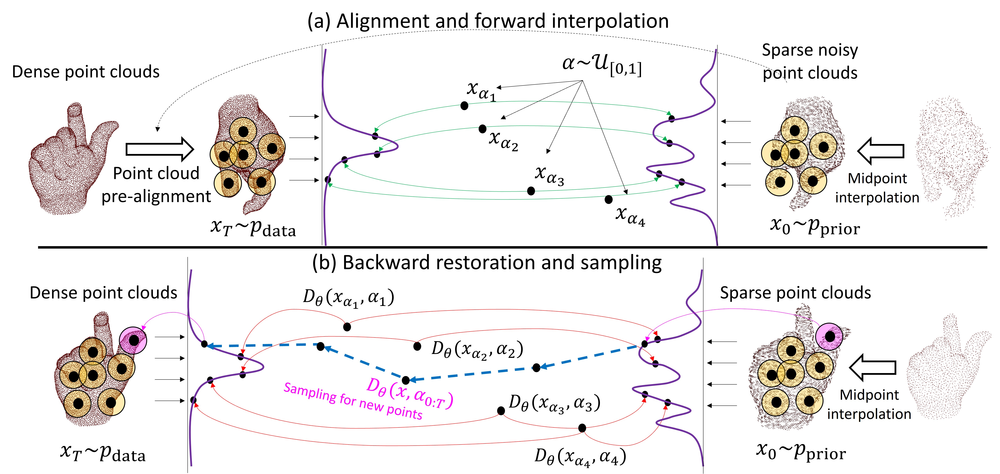
No preview
arXiv:2512.20988 · Preprint (Dec 2025)
No preview
No preview
Image Analysis, SCIA 2025. Lecture Notes in Computer Science, vol 15725
No preview
Atmospheric Environment, 363, 121602, 2025
No preview
IEEE Journal of Selected Topics in Applied Earth Observations and Remote Sensing (JSTARS), 2025
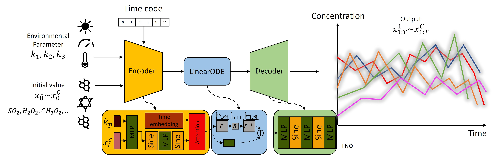
2024
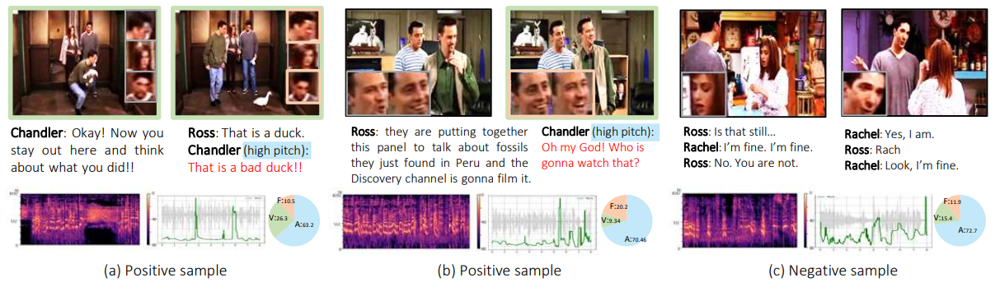
International Journal of Computer Vision, 2024
No preview
Computer Vision – ECCV 2024 Workshops. LNCS vol 15627
No preview
European Conference on Computer Vision (ECCV), 2024
2023
No preview
IEEE ICIP, Kuala Lumpur, 2023
2022
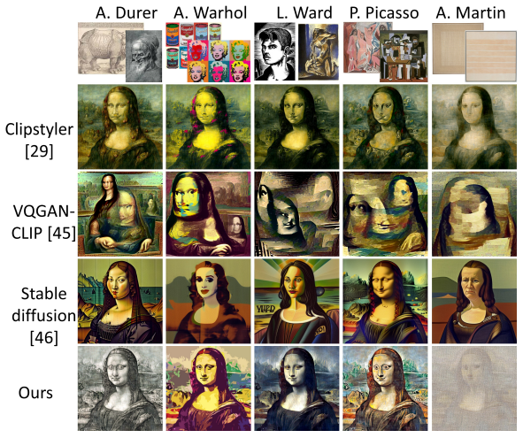
CVPR 2023 (Submitted)
🏅 Best Student Award Honorable Mention
Asian Conference on Computer Vision (ACCV), 2022
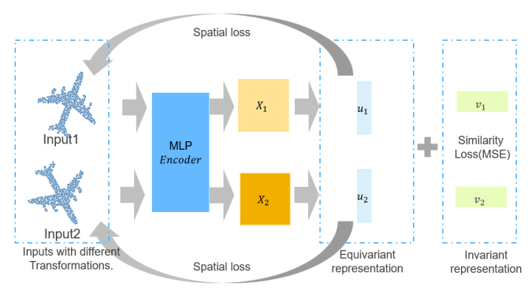
Asian Conference on Computer Vision (ACCV), 2022
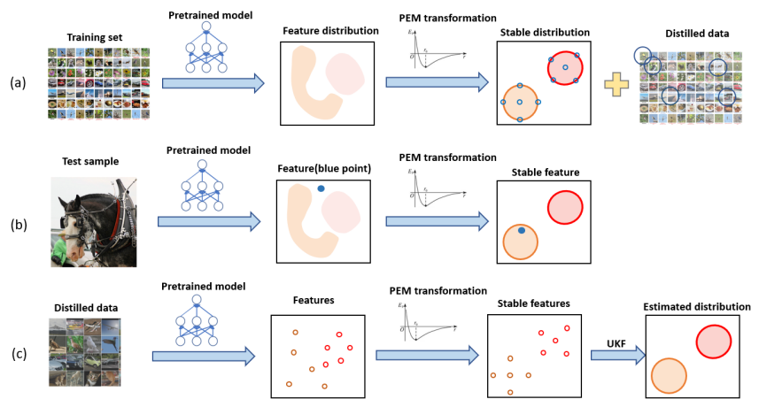
Asian Conference on Computer Vision (ACCV), 2022
No preview
2 papers at NeurIPS 2022 Machine Learning for Autonomous Driving Workshop
NeurIPS 2022 Workshop
2021
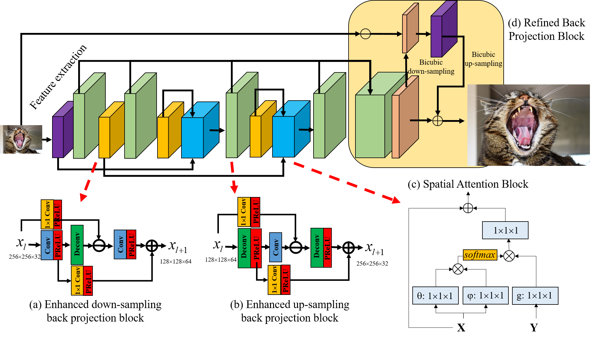
IEEE Conference on Computer Vision and Pattern Recognition (CVPR), 2021
2020
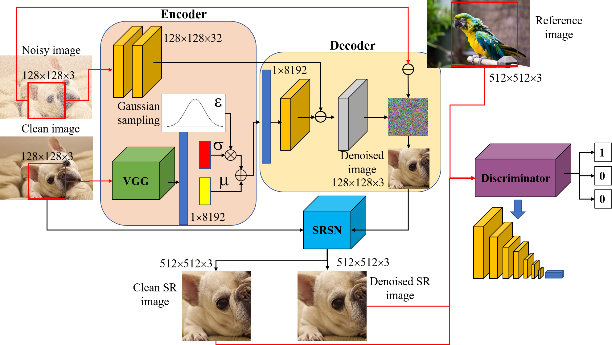
IEEE Signal Processing Letters, 2021
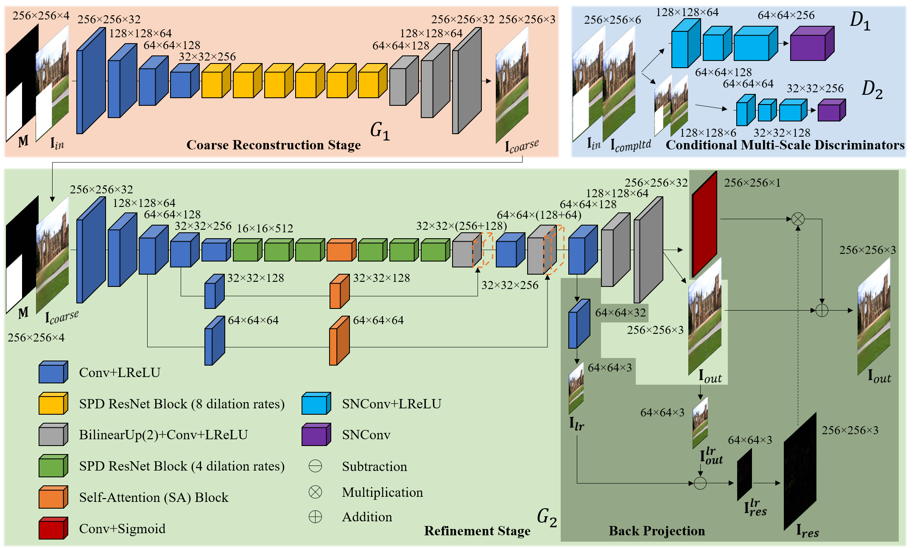
European Conference on Computer Vision (ECCV) Workshops, 2020
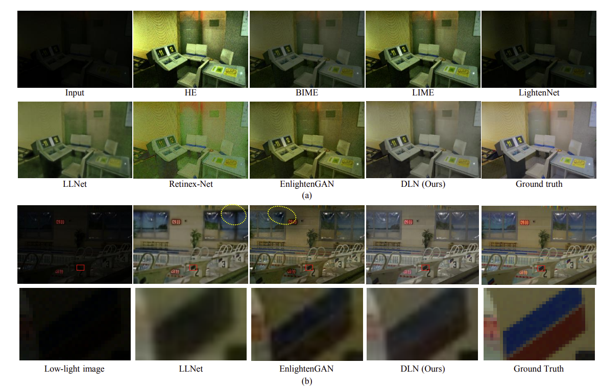
European Conference on Computer Vision (ECCV) Workshops, 2020

ACM International Conference on Multimedia (ACM-MM), 2020
2019
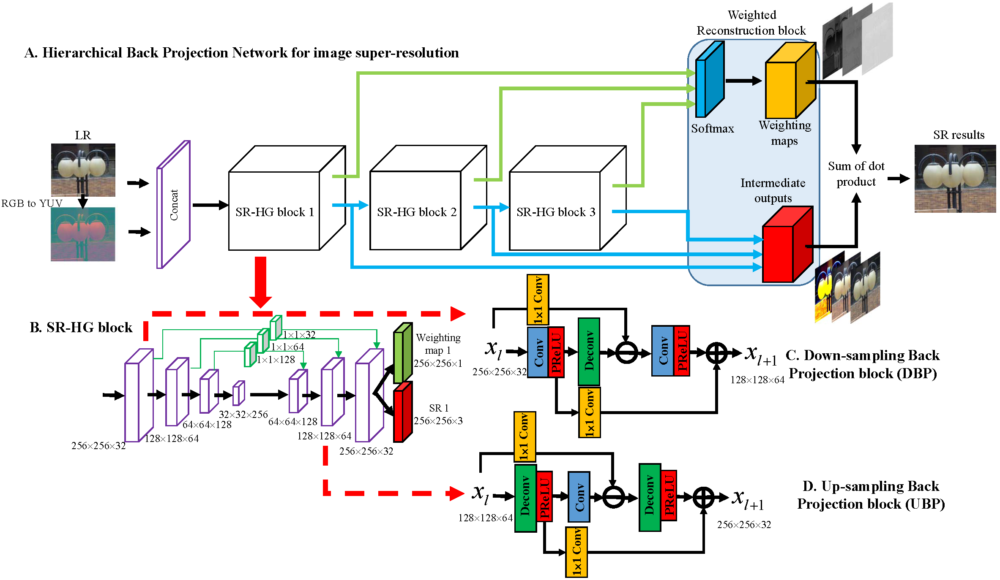
🏆 Top rank on Urban100, BSD100 and Manga109
IEEE CVPR Workshops, 2019
2018
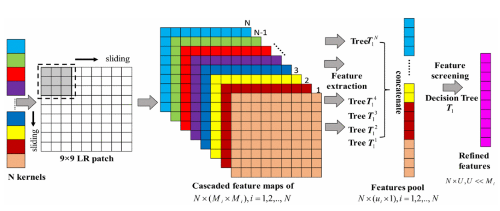
IEEE International Conference on Image Processing (ICIP), 2018
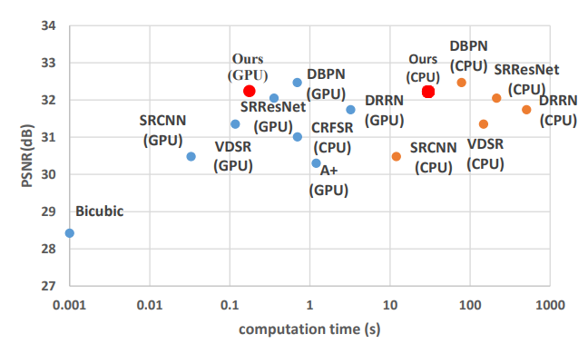
IEEE APSIPA-ASC, 2018
2017
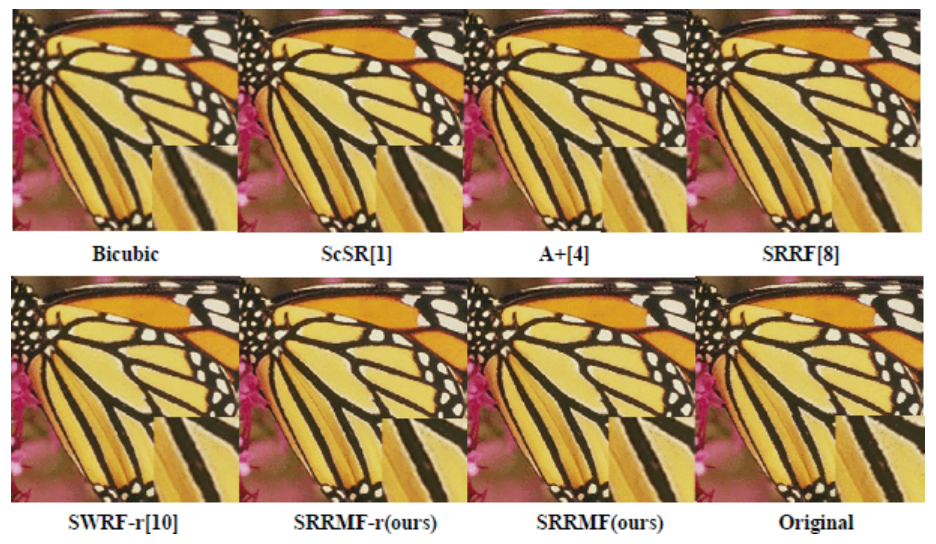
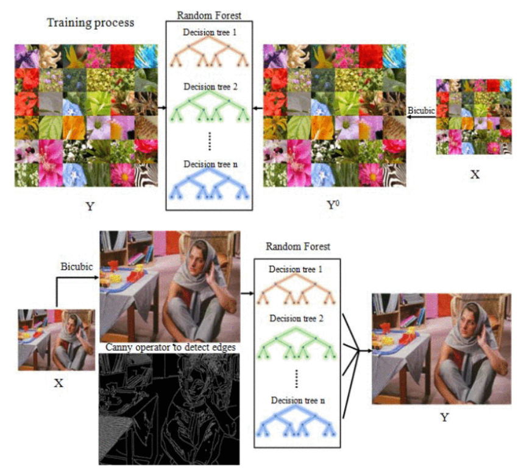
2015
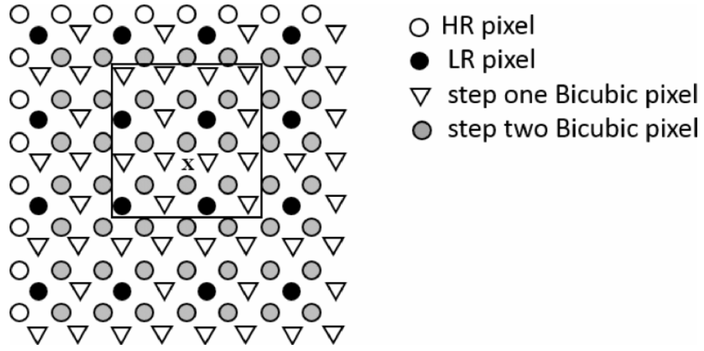